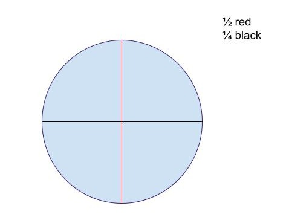

Extend Yourself - Snap Circuits Rover: Night Rover
 Build Another Rover
Build Another Rover
Explore the Snap Circuits Rover Instruction Manual and choose another rover to build, or come up with your own rover design. Add a back story to your rover. What is its job? Where is it exploring? Will it carry goods or people? What special features will it need to operate?
Research NASA's Rovers
Check out NASA's website and click on the "Missions" tab to explore all the different rovers the United States has sent to space.
Learn About Mars Rover Engineers
Are you curious to know what it takes to be a Mars Rover Engineer? Do you want to know what a typical day is like for someone in this profession? What education and skills would you need? Find out more about this career on the Career Girls website. If you scroll down, you will find a list of videos, the bio of a Mars Rover Systems Engineer, and a section called Related Role Models, which includes other types of engineers.
Garden Partition
Imagine you are designing a garden. Divide a shape into equal parts, such as fourths or eighths, and then sketch what you would choose to plant in each section.
